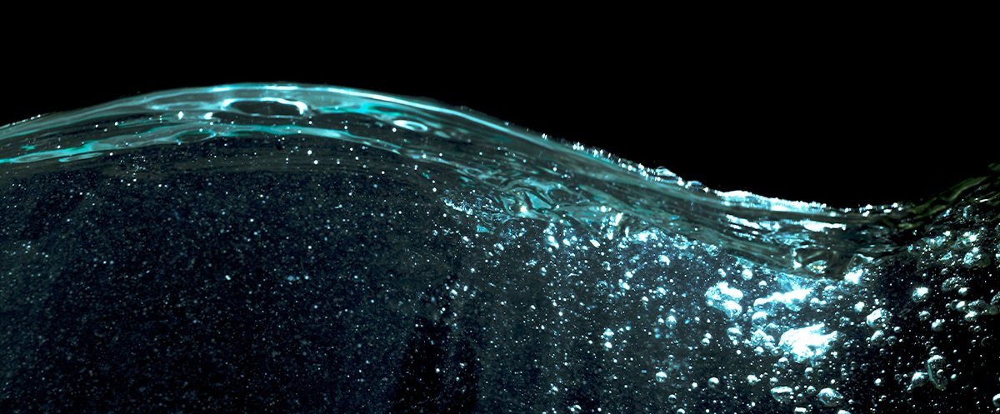

What Doctor Said About Kangen Water?

“Kangen water is purported to be the ultimate choice for hydration, detoxification, and antioxidation, as stated in The Enzyme Factors on page 159. Renowned for its exceptional hydrating properties beyond traditional water, Kangen water is said to offer superior detoxification benefits by aiding in the removal of toxins from the body. Moreover, it is credited with antioxidant capabilities, potentially assisting in combatting oxidative stress. While these claims are presented in the source, it is essential to approach such assertions critically and seek diverse perspectives for a more comprehensive understanding.”


 Home
Home